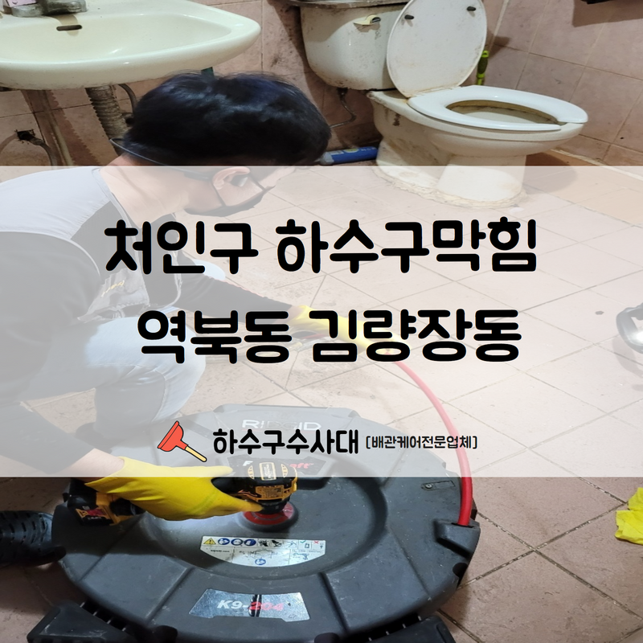

🏠 처인구 하수구막힘 역북동 김량장동 상황에 맞는 장비로 빠른 해결해 드렸습니다!
용인 처인구 하수구막힘 전문 시공 후기

📋 작업 개요
- 위치: 용인 처인구, 처인구, 용인
- 서비스 유형: 하수구막힘, 배관막힘, 역류해결, 뚫는업체, 고압세척
- 작업 일시: 2022. 8. 25. 22:36
- 업체명: 하수구수사대 (010-5615-2118)
🔍 문제 상황
안녕하세요.하수구수사대 입니다.반갑습니다.
평소 물을 자주 사용하는 공간은 어디든 배수구가 위치해있는 모습을 확인할 수 있습니다. 하수구는 제대로 관리가 이루어지지 않으면 쉽게 막혀버리기 때문에 갑작스러운 막힘이 발생했을 때 제대로 된 대처가 이루어져야 일상 속 불편함을 없앨 수 있으며 다양한 문제로 이어질 가능성을 배제할 수 있습니다. 정확한 원인을 파악하는 것이 중요하며 처인구 하수구막힘 역북동 김량장동 막힘이 발생되었다면 즉시 뚫어 주는 것이 가장 좋습니다.
처인구 하수구막힘 역북동 김량장동 현장 알아보겠습니다.
일반적으로 우리가 거주하고 있는 공간에서 하수구막힘 현상이 있을 때 베이킹소다, 식초 등 뜨거운 물을 활용하여 해결할 수 있습니다. 베이킹소다와 식초를 하수구 내부에 부어준 후 뜨거운 물을 부어주면 세척 효과가 나타나게 되는데요.
천연 세정제로 알려진 베이킹소다를 사용하게 되면 얼룩, 기름때 제거를 할 수 있으며 식초는 하수구 내부를 깔끔하게 세척하는 데 도움을 줄 수 있습니다.

🔎 원인 분석
💡 전문가 진단: 처인구 하수구막힘 역북동 김량장동 현장 알아보겠습니다.
배수구 막힘 문제가 발생했을 경우에는
가장 기본적인 방법으로 베이킹소다, 식초, 뜨거운 물을 활용하여 막힌 하수구를 뚫어보실 수 있는데요.간단한 세척만으로 배수구를 뚫는 것이 어렵다면 집 안에 있을 법한 뚫어 뻥을 활용해 주시면 좋습니다.
뚫어 뻥으로 갑작스레 막힌 하수구를 간단하게 뚫어볼 수 있는데요.너무 꽉 막혀버린 경우에는 일회성 작업이 아니라 여러 차례 지속적인 작업을 해줘야만 확실한 효과를 볼 수 있을 것입니다.
뚫어뻥이 듣지 않는다면 더욱 강력한 것으로 작업해야 하는데요.
뚫어 뻥 작업을 해보았지만 막힘을 해결하기 어렵다면 더욱 강한 압력을 가할 수 있도록 공기압 뚫어 뻥을 이용해하여 작업하실 방법도 있는데요. 다양한 방법들로도 배수구가 뚫리지 않는다면 단순한 원인이 아닌 배관 저 내부 깊은 곳에 문제가 발생했을 가능성이 굉장히 높습니다.

🔧 작업 과정
관련 지식이 없는 힘으로 해결하려 했다가는 배관이 미파열되거나 또 다른 문제를 일으킬 수 있기 때문에 전문 장비가 있는 업체에 의뢰하여 정확한 원인 파악을 해준 후 그에 맞는 방법을 적용해 막힌 하수구를 뚫어주는 것이 좋습니다.
다양한 장비들도 시공을 진행합니다.
전동 와이어 스프링, 플렉스 샤프트 등과 같은 다양한 전문 장비를 보유하고 있어 현장 상황에 알맞은 적절한 장비를 활용하여 발생한 문제를 손쉽게 해결할 수 있습니다.
처인구 하수구막힘 역북동 김량장동 현장 등 하수구 막힘의 원인을 파악하기에는 원인이 매우 다양합니다. 유선상으로 전화를 많이 주시지만 사실 유선상으로는 파악할 수 없는 부분이 많기 때문에 현장에서 도착해서 면밀히 살펴보아야 어떠한 원인으로 막혀 있는지는 파악할 수 있습니다.
유선상의 문의만으로는 예측하는 데에 어려움이 있습니다.
현장에서 다양한 최신 장비를 이용하여 원만히 해결해 드리고 있으며 작업 과정에 필요한 다양한 장비를 보유하고 있고 각각의 사용법 역시 부족함 없이 인지하고 있기에 다른 업체보다 훨씬 빠르고 확실한 문제 해결이 가능합니다.
배수구 막힘 역류로 고민이 되신다면 저희 하수구수사대를 불러주시기 바랍니다. 전문 업체를 통하여 제대로 된 과정을 거쳐서 문제를 해결하시면 배수구를 처음 설치했을 때와 비슷한 상태로 사용 가능하며 하수구 막힘으로 인한 걱정을 완전히 날려버릴 수 있으실 겁니다.
이러한 작업들은 무엇보다 신속한 조치가 중요하다는

✅ 작업 완료
사실 잊지 마시고 오늘 포스팅 꼭 기억해두시길 바랍니다.
경기도 용인시 처인구 중부대로1313번길 20-25 2층 202호 나21
⚠️ 하수구 배관 막힘 예방 및 관리 가이드
- ✅ 머리카락, 비닐, 물티슈 등 물에 분해되지 않는 이물질은 하수구 유입을 절대 금지해 주세요.
- ✅ 하수구 거름망을 씌우고 모여진 이물질은 주기적으로 쓰레기통에 바로 비워주셔야 합니다.
- ✅ 배관 노후가 심할 경우 이물질이 더 쉽게 걸리므로 주기적인 배관 세척(고압세척 등)을 권장합니다.
- ✅ 작업 후 1년 이내 재발 시 하수구수사대에서 무상 A/S 보증 서비스를 제공합니다.
💡 핵심 정리
- 확실한 장비 작업(내시경 점검 및 샤프트 스케일링)으로 원인을 뿌리 뽑습니다.
- 작업 후 1년 이내에 동일한 부위 재발 시 100% 무상 A/S 서비스를 보장합니다.
- 서울 · 경기 · 인천 전 지역에 24시간 언제든 긴급 출동할 수 있도록 항시 대기 중입니다.
❓ 자주 묻는 질문 (FAQ)
🚨 용인 처인구 하수구막힘 문제로 고민이신가요?
정확한 원인 진단과 확실한 시공으로 재발 없는 해결을 약속드립니다.
24시간 긴급 출동 | 서울 · 경기 · 인천 전지역 | 1년 내 재발 시 무상 A/S